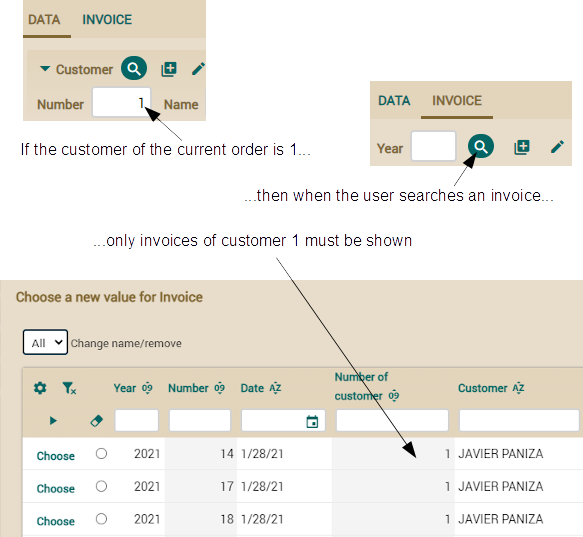
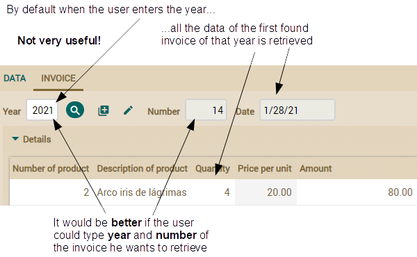
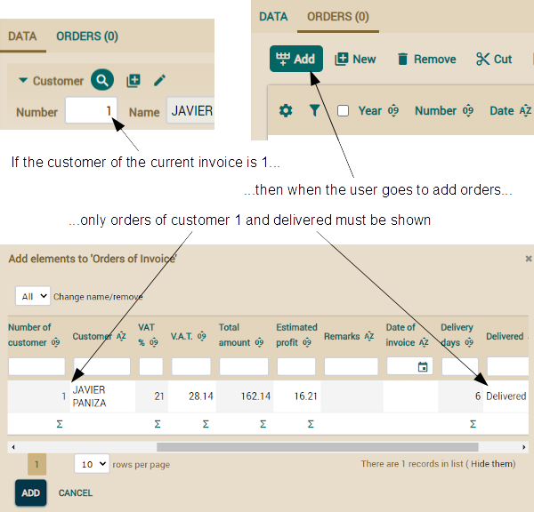

Here we verify that the customer
of the invoice is the same as the customer of this order. This is enough
to preserve the data integrity, but this validation alone is a poor option
from the user viewpoint.
Refining action for searching reference with list
Although validation prevents the user from assigning an incorrect invoice
to an order, he has a hard time trying to find a correct invoice. Because
when the user clicks to search an invoice, all existing invoices are
shown. We are going to improve this for showing only the invoices from the
customer of the current displayed order, in this way:
 For defining our own search
action for the invoice reference we will use the
@SearchAction
annotation. Here you have the needed modification in
Order
class:
public class Order extends CommercialDocument {
@ManyToOne
@ReferenceView("NoCustomerNoOrders")
@OnChange(ShowHideCreateInvoiceAction.class)
@SearchAction("Order.searchInvoice") // To define our own action to search invoices
Invoice invoice;
...
}
In this simple way we define the action to execute when the user
clicks on the flashlight button to search an invoice. The argument used
for
@SearchAction,
Order.searchInvoice, is the qualified
name of the action, that is the action
searchInvoice of the
controller
Order as defined in
controllers.xml file. Now
we have to edit
controllers.xml to add the definition of our new
action:
<controller name="Order">
...
<action name="searchInvoice"
class="com.yourcompany.invoicing.actions.SearchInvoiceFromOrderAction"
hidden="true" icon="magnify"/>
<!--
hidden="true" : Because we don't want the action to be shown in module button bar
icon="magnify" : The same icon as for the standard search action
-->
</controller>
Our action extends from
ReferenceSearchAction as shown in
the next code:
package com.yourcompany.invoicing.actions; // In 'actions' package
import org.openxava.actions.*; // To use ReferenceSearchAction
public class SearchInvoiceFromOrderAction
extends ReferenceSearchAction { // Standard logic for searching a reference
public void execute() throws Exception {
int customerNumber =
getView().getValueInt("customer.number"); // Reads from the view the
// customer number of the current order
super.execute(); // It executes the standard logic that shows a dialog
if (customerNumber > 0) { // If there is customer we use it to filter
getTab().setBaseCondition("${customer.number} = " + customerNumber);
}
}
}
Note how we use
getTab().setBaseCondition() to establish a
condition for the list to choose the reference. That is, from a
ReferenceSearchAction you can use
getTab() to manipulate the
way the search list behaves.
If there is no customer we don't add any condition so all the invoices
will be shown, this is the case when the user chooses the invoice before
choosing the customer.
Searching the reference typing in fields
The list for choosing a reference already works fine. However, we want to
give the user the possibility to choose the invoice without the list, by
just typing the year and number. Very useful if the user already know
which invoice he wants. OpenXava provides this functionality by default.
If the
@Id fields are displayed in the reference they are used for
searching, otherwise OpenXava uses the first displayed field to search.
This is not convenient in our case, because the first displayed field is
the year, and searching an invoice only by year is not very precise. The
following image shows the default behavior and a more convenient
alternative:

Fortunately it's easy to indicate which fields we want to use to search
from a user perspective. This is done by means of
@SearchKey
annotation. Just edit the
CommercialDocument class (remember, the
parent of
Order and
Invoice) and add that annotation to
the
year and
number properties:
abstract public class CommercialDocument extends Deletable {
@SearchKey // Add this annotation here
@Column(length=4)
@DefaultValueCalculator(CurrentYearCalculator.class)
int year;
@SearchKey // Add this annotation here
@Column(length=6)
@ReadOnly
int number;
...
}
In this way when the user searches an order or invoice from a
reference he must type the year and the number, and the corresponding
entity will be retrieved from database and will populate the user
interface.
Now it's easy for the user to choose an invoice for the order without
using the searching list, just by typing year and number.
Refining action for searching reference typing key
Now that retrieving an invoice by the year and number is usable, we want
to refine it in order to help our user to do his work more efficiently.
For example, it would be useful that if the user has not chosen a customer
for the order yet and he chooses an invoice, the customer of that invoice
will be assigned to the current order automatically. The following image
visualizes the wanted behavior:

On the other hand, if the user already has selected the customer for the
order, if he is not the same in the invoice, it will be rejected and a
message error displayed, just in this way:
For defining this special
behavior we have to add an
@OnChangeSearch annotation in the the
invoice
reference of
Order.
@OnChangeSearch allows you to define
your own action to do the search of the reference when its key changes in
the user interface. You can see the modified reference here:
public class Order extends CommercialDocument {
@ManyToOne
@ReferenceView("NoCustomerNoOrders")
@OnChange(ShowHideCreateInvoiceAction.class)
@OnChangeSearch(OnChangeSearchInvoiceAction.class) // Add this annotation
@SearchAction("Order.searchInvoice")
Invoice invoice;
...
}
From now on when the user types a new year and number for the
invoice, the logic of
OnChangeSearchInvoiceAction will be
executed. In this action you have to read the invoice data from database
and update the user interface. This is the action code:
package com.yourcompany.invoicing.actions; // In 'actions' package
import java.util.*;
import org.openxava.actions.*; // To use OnChangeSearchAction
import org.openxava.model.*;
import org.openxava.view.*;
import com.yourcompany.invoicing.model.*;
public class OnChangeSearchInvoiceAction
extends OnChangeSearchAction { // Standard logic for searching a reference when
// the key values change in the user interface (1)
public void execute() throws Exception {
super.execute(); // It executes the standard logic (2)
Map keyValues = getView()// getView() here is the reference view, not the main one (3)
.getKeyValuesWithValue();
if (keyValues.isEmpty()) return; // If key is empty no additional logic is executed
Invoice invoice = (Invoice) // We search the Invoice entity from the typed key (4)
MapFacade.findEntity(getView().getModelName(), keyValues);
View customerView = getView().getRoot().getSubview("customer"); // (5)
int customerNumber = customerView.getValueInt("number");
if (customerNumber == 0) { // If there is no customer we fill it (6)
customerView.setValue("number", invoice.getCustomer().getNumber());
customerView.refresh();
}
else { // If there is already customer we verify that he matches the invoice customer (7)
if (customerNumber != invoice.getCustomer().getNumber()) {
addError("invoice_customer_not_match",
invoice.getCustomer().getNumber(), invoice, customerNumber);
getView().clear();
}
}
}
}
Given the action extends from
OnChangeSearchAction (1) and
we use
super.execute() (2) it behaves just in the standard way,
that is, when the user types a year and number the invoice data is
retrieved and fills the user interface. Afterwards, we use
getView()
(3) to obtain the key of the displayed invoice to find the corresponding
entity using
MapFacade (4). From inside an
OnChangeSearchAction
getView() returns the subview of the reference, and not the global
view. Therefore, in this case
getView() is the view of the invoice
reference. This allows you to create more reusable
@OnChangeSearch
actions. Thus you have to write
getView().getRoot().getSubview(“customer”)
(5) to access to the customer view.
To implement the behavior visualized in the previous image, the action
asks if there is no customer (
customberNumber == 0) (6). If this is
the case it fills the customer from the customer of the invoice. Otherwise
it implements the logic from previous image verifying that the customer of
the current order matches the customer of the retrieved invoice.
The last remaining detail is the message text. Add the next entry to the
Invoicing-messages_en.properties
file of
i18n folder.
invoice_customer_not_match=Customer Nº {0} of invoice {1} does not match with customer Nº {2} of the current order
One interesting thing about
@OnChangeSearch is that it is
also executed when the invoice is chosen from a list, because in this case
the year and number of the invoice also changes. Hence, this is a
centralized place to refine the logic for retrieving the reference and
populating the view.
Refining collection behavior
We can refine collections in the same way we have refined references. This
is very useful, because it allows us to improve the current behavior of
the
Invoice module. The user can only add an order to an invoice
if the invoice and the orders belongs to the same customer. Moreover, the
order must be delivered and must not have an invoice yet.
Refining the list for adding elements to a collection
Currently when the user tries to add orders to an invoice all the orders
are available. We are going to improve this for showing only the orders
from the customer of the invoice, delivered and with not invoice yet, just
as shown:

We will use the
@AddAction annotation for defining our own action
to show the list for adding orders. The following code shows the needed
modification in
Invoice class.
public class Invoice extends CommercialDocument {
@OneToMany(mappedBy="invoice")
@CollectionView("NoCustomerNoInvoice")
@AddAction("Invoice.addOrders") // To define our own action to add orders
Collection<Order> orders;
...
}
In this simple way we define the action to execute when the user
clicks on the button to add orders. The argument used for
@AddAction,
Invoice.addOrders, is the qualified name of the action, that is the
action
addOrders of the controller
Invoice as defined in
controllers.xml file.
Now we have to edit
controllers.xml to add the
Invoice
controller (it does not exist yet) definition with our new action:
<controller name="Invoice">
<extends controller="Invoicing"/>
<action name="addOrders"
class="com.yourcompany.invoicing.actions.GoAddOrdersToInvoiceAction"
hidden="true" icon="table-row-plus-after"/>
<!--
hidden="true" : Because we don't want the action to be shown in module button bar
icon="table-row-plus-after" : The same icon as for the standard action
-->
</controller>
This is the action code:
package com.yourcompany.invoicing.actions; // In 'actions' package
import org.openxava.actions.*; // To use GoAddElementsToCollectionAction
public class GoAddOrdersToInvoiceAction
extends GoAddElementsToCollectionAction { // Standard logic to go to
// adding collection elements list
public void execute() throws Exception {
super.execute(); // It executes the standard logic, that shows a dialog
int customerNumber =
getPreviousView() // getPreviousView() is the main view (we are in a dialog)
.getValueInt("customer.number"); // Reads the customer number
// of the current invoice from the view
getTab().setBaseCondition( // The condition of the orders list to add
"${customer.number} = " + customerNumber +
" and ${delivered} = true and ${invoice} is null"
);
}
}
Note how we use
getTab().setBaseCondition() to establish a
condition for the list to choose the entities to add. That is, from a
GoAddElementsToCollectionAction you can use
getTab() to
manipulate the way the list behaves.
Refining the action to add elements to a collection
A useful improvement for the orders collection would be that when the user
adds orders to the current invoice, the detail lines of those orders will
be copied automatically to the invoice.
We cannot use the
@AddAction for this, because it is the action to
show the list to add elements to the collection. But this is not the
action that adds the elements.
Let's learn how to define the action that actually adds the elements:

Unfortunately, there is not an annotation to directly define this 'Add'
action. However, that is not a very difficult task, we only have to refine
the
@AddAction instructing it to show our own controller, and in
this controller we can put the actions we want. Given we already have
defined our
@AddAction in the previous section we only have to add
a new method to the already existing
GoAddOrdersToInvoiceAction
class. Add the next
getNextController() method to your action:
public class GoAddOrdersToInvoiceAction ... {
...
public String getNextController() { // We add this method
return "AddOrdersToInvoice"; // The controller with the available actions
} // in the list of orders to add
}
By default the actions in the list of entities to add (the 'Add'
and 'Cancel' buttons) are from the standard OpenXava controller
AddToCollection.
Overwriting
getNextController() in our action allows us to define
our own controller instead. Add the next definition in
controllers.xml
for our custom controller for adding elements:
<controller name="AddOrdersToInvoice">
<extends controller="AddToCollection" /> <!-- Extends from the standard controller -->
<!-- Overwrites the action to add -->
<action name="add"
class="com.yourcompany.invoicing.actions.AddOrdersToInvoiceAction" />
</controller>
In this way the action to add orders to the invoice is
AddOrdersToInvoiceAction.
Remember that the goal of our action is to add the orders to the invoice
in the usual way, but also to copy the detail lines from those orders to
the invoice. This is the code of the action:
package com.yourcompany.invoicing.actions; // In 'actions' package
import java.rmi.*;
import java.util.*;
import javax.ejb.*;
import org.openxava.actions.*; // To use AddElementsToCollectionAction
import org.openxava.model.*;
import org.openxava.util.*;
import org.openxava.validators.*;
import com.yourcompany.invoicing.model.*;
public class AddOrdersToInvoiceAction
extends AddElementsToCollectionAction { // Standard logic for adding
// collection elements
public void execute() throws Exception {
super.execute(); // We use the standard logic “as is”
getView().refresh(); // To display fresh data, including recalculated
} // amounts, which depend on detail lines
protected void associateEntity(Map keyValues) // The method called to associate
throws ValidationException, // each entity to the main one, in this case to
XavaException, ObjectNotFoundException,// associate each order to the invoice
FinderException, RemoteException
{
super.associateEntity(keyValues); // It executes the standard logic (1)
Order order = (Order) MapFacade.findEntity("Order", keyValues); // (2)
order.copyDetailsToInvoice(); // Delegates the main work to the entity (3)
}
}
We overwrite the
execute() method only to refresh the view
after the process. Really, we want to refine the logic for associating an
order to the invoice. The way to do this is overwriting the
associateEntity()
method. The logic here is simple, after executing the standard logic (1)
we search the corresponding
Order entity and then call the
copyDetailsToInvoice()
in that
Order. Luckily we already have a method to copy details
from an
Order to the specified
Invoice, we just call this
method.
Now you only have to create a new
invoice, choose a customer and add orders. It is even easier than using
the list mode of
Order module because from
Invoice module
only the suitable orders for the customer are shown.
JUnit tests
We still are in the healthy habit of doing some application code, then
some testing code. And now it's time to write the test code for the new
feature we added in this lesson.
Adapting OrderTest
If you run
OrderTest right now it does not pass. This is because
our test code relies in some details that have changed. Therefore, we have
to modify the current test code. Edit the
testSetInvoice() method
of
OrderTest and apply the next changes:
public void testSetInvoice() throws Exception {
...
assertValue("invoice.number", "");
assertValue("invoice.year", "");
// execute("Reference.search", // The standard action for invoice searching
// "keyProperty=invoice.year"); // is no longer used
execute("Order.searchInvoice", // Instead we use our custom action (1)
"keyProperty=invoice.number");
execute("List.orderBy", "property=number");
...
// Restore values
setValue("delivered", "false");
setValue("invoice.year", ""); // Now we need to type a year
setValue("invoice.number", ""); // and a number to search the invoice (2)
execute("CRUD.save");
assertNoErrors();
}
Remember that we annotated the invoice reference in
Order with
@SearchAction("Order.searchInvoice"), so we have to modify the test
to call
Order.searchInvoice (1) instead of
Reference.search.
Also we added
@SearchKey to year and number of
CommercialDocument,
therefore our test has to indicate both year and number to get (or clear
in this case) an invoice (2). Because of this last point we also have to
modify
testCreateInvoiceFromOrder() of
OrderTest:
public void testCreateInvoiceFromOrder() throws Exception {
...
// Restoring the order for running the test the next time
setValue("invoice.year", ""); // Now we need to type a year
setValue("invoice.number", ""); // and a number to search the invoice (2)
assertValue("invoice.number", "");
assertCollectionRowCount("invoice.details", 0);
execute("CRUD.save");
assertNoErrors();
}
After these changes the
OrderTest must pass. However, we
still have to add the testing of the new functionality of
Order
module.
Testing the @SearchAction
We have used
@SearchAction in the
invoice reference of
Order
for showing in the search list only the invoices from the customer of the
current order. Add the next method to
OrderTest to test of this
functionality:
public void testSearchInvoiceFromOrder() throws Exception {
execute("CRUD.new");
setValue("customer.number", "1"); // If the customer is 1...
execute("Sections.change", "activeSection=1");
execute("Order.searchInvoice", // ...when the user clicks to choose an invoice...
"keyProperty=invoice.number");
assertCustomerInAllRows("1"); // ...only the invoices of customer 1 are shown
execute("ReferenceSearch.cancel");
execute("Sections.change", "activeSection=0");
setValue("customer.number", "2"); // And if the customer is 2...
execute("Sections.change", "activeSection=1");
execute("Order.searchInvoice", // ...when the user clicks to choose an invoice...
"keyProperty=invoice.number");
assertCustomerInList("2"); // ...only the invoices of customer 2 are shown
}
The trickier part is to assert the invoices list, this is the work
for
assertCustomerInAllRows() in
OrderTest:
private void assertCustomerInAllRows(String customerNumber) throws Exception {
assertListNotEmpty();
int c = getListRowCount();
for (int i=0; i<c; i++) { // A loop over all rows
if (!customerNumber.equals(getValueInList(i, "customer.number"))) {
fail("Customer in row " + i + // If the customer is not the expected one it fails
" is not " + customerNumber);
}
}
}
It consists in a loop over all rows verifying the customer number.
Testing the @OnChangeSearch
We used
@OnChangeSearch in the
invoice reference of
Order
for assigning automatically the customer of the chosen invoice to the
current order when the order has no customer yet, or for verifying that
the invoice and order customer matches, if the order already has a
customer. This is the test method in
OrderTest:
public void testOnChangeInvoice() throws Exception {
execute("CRUD.new"); // We are creating a new order
assertValue("customer.number", ""); // so it has no customer yet
execute("Sections.change", "activeSection=1");
execute("Order.searchInvoice", // Looks for the invoice using a list
"keyProperty=invoice.number");
execute("List.orderBy", "property=customer.number"); // It orders by customer
String customer1Number = getValueInList(0, "customer.number"); // Memorizes..
String invoiceYear1 = getValueInList(0, "year"); // ..the data of the...
String invoiceNumber1 = getValueInList(0, "number"); // ...first invoice
execute("List.orderBy", "property=customer.number"); // It orders by customer
String customer2Number = getValueInList(0, "customer.number"); // Memorizes..
String customer2Name = getValueInList(0, "customer.name"); // ..the data of
// ...the last invoice
assertNotEquals("Must be invoices of different customer",
customer1Number, customer2Number); // The 2 memorized invoices aren't the same
execute("ReferenceSearch.choose","row=0");// The invoice is chosen using the list (1)
execute("Sections.change", "activeSection=0");
assertValue("customer.number", customer2Number); // The customer data is
assertValue("customer.name", customer2Name); // filled automatically (2)
execute("Sections.change", "activeSection=1");
setValue("invoice.year", invoiceYear1); // We try to put an invoice of another...
setValue("invoice.number", invoiceNumber1); // ...customer (3)
assertError("Customer Nº " + customer1Number + " of invoice " + // It shows
invoiceYear1 + "/" + invoiceNumber1 + // an error message... (4)
" does not match with Customer Nº " +
customer2Number + " of the current order");
assertValue("invoice.year", ""); // ...and resets the invoice data (5)
assertValue("invoice.number", "");
assertValue("invoice.date", "");
}
Here we test that our on-change action fills the customer data (3)
on choosing an invoice (2), and that if the customer is already set, an
error message is shown (4) and the invoice is cleared in the view (5).
Note how the first time we use the list (1) to choose the invoice and the
second time we do it typing the year and number (3).
Adapting InvoiceTest
As in the case of
OrderTest,
InvoiceTest also fails to
pass. You have to do a little adjustments so it works fine. Edit
testAddOrders()
of
InvoiceTest and apply the next changes:
public void testAddOrders() throws Exception {
assertListNotEmpty();
execute("List.orderBy", "property=number");
execute("Mode.detailAndFirst");
execute("Sections.change", "activeSection=1");
assertCollectionRowCount("orders", 0);
// execute("Collection.add", // The standard action for adding orders is no longer used
execute("Invoice.addOrders", // Instead we use our custom action
"viewObject=xava_view_section1_orders");
// checkFirstOrderWithDeliveredEquals("Delivered"); // Now all orders in the list are
// checkFirstOrderWithDeliveredEquals(""); // delivered so it makes no sense
// execute("AddToCollection.add"); // Instead of the standard action...
execute("AddOrdersToInvoice.add", "row=0"); // ...now we have our custom one
// assertError("ERROR! 1 element(s) NOT added to Orders of Invoice"); // It is
// impossible because the use cannot chose incorrect orders
assertMessage("1 element(s) added to Orders of Invoice");
assertCollectionRowCount("orders", 1);
checkRowCollection("orders", 0);
execute("Collection.removeSelected",
"viewObject=xava_view_section1_orders");
assertCollectionRowCount("orders", 0);
}
The
checkFirstOrderWithDeliveredEquals() method is no
longer necessary, therefore we can remove it from
InvoiceTest:
// Remove checkFirstOrderWithDeliveredEquals() from InvoiceTest
// private void checkFirstOrderWithDeliveredEquals(String value)
// throws Exception { ... }
After these changes the
InvoiceTest must pass. However, we
still have to add the testing of the new functionality of
Invoice
module.
Testing the @AddAction
In this lesson we annotated the
orders collection of
Invoice
with
@AddAction to refine the list of orders to be added to the
collection. In this way only delivered orders of the customer of the
current invoice and with no invoice yet are shown. We are going to test
this, and at the same time, we'll learn how to refactor the existing code
in order to reuse it.
First, we want to verify that the list to add orders only contains orders
of the current customer. The next code shows the changes in
testAddOrders()
of
InvoiceTest to accomplish this.
public void testAddOrders() throws Exception {
assertListNotEmpty();
execute("List.orderBy", "property=number");
execute("Mode.detailAndFirst");
String customerNumber = getValue("customer.number"); // We take note of the
execute("Sections.change", "activeSection=1"); // customer of the invoice
assertCollectionRowCount("orders", 0);
execute("Invoice.addOrders",
"viewObject=xava_view_section1_orders");
assertCustomerInList(customerNumber); // We assert all customers in list
// matches the invoice customer
...
}
Now we have to write the
assertCustomerInList() method.
But, wait a minute, we already have written this method in
OrderTest.
We are in
InvoiceTest so we cannot call this method, fortunately
both
InvoiceTest and
OrderTest extend the
CommercialDocumentTest,
therefore we only need to pull up the method. To do it copy the
assertCustomerInList()
method from
OrderTest and paste it in
CommercialDocumentTest,
changing
private to
protected, just as shown:
abstract public class CommercialDocumentTest extends ModuleTestBase {
protected void // We change private to protected
assertCustomerInList(String customerNumber) throws Exception {
...
}
...
}
TMP ME QUEDÉ POR AQUÍ Now you can remove the
assertCustomerInList() method from OrderTest (listing 9.27).
Listing 9.27 assertCustomerInList() removed from OrderTest
public class OrderTest extends CommercialDocumentTest {
private void assertCustomerInList(String customerNumber)
throws Exception { ... }
...
}
After these changes the testAddOrders() method compiles and works. We not
only want to test if the orders in list are from the correct customer, but
also that they are delivered. The first primary impulse is to copy and
paste assertCustomerInList() for creating an assertDeliveredInList()
method. However, we resist the temptation, instead we are going to create
a reusable method. First, we copy and paste assertCustomerInList() as
assertValueForAllRows(). Listing 9.28 shows these two methods in
CommercialDocumentTest.
Listing 9.28 Creating assertValueForAllRows() from assertCustomerInList()
protected void assertCustomerInList(String customerNumber) throws Exception {
assertListNotEmpty();
int c = getListRowCount();
for (int i=0; i<c; i++) {
if (!customerNumber.equals(
getValueInList(i, "customer.number"))) // We ask “ad hoc” for customer
{
fail("Customer in row " + i + " is not of customer "
+ customerNumber);
}
}
}
protected void assertValueForAllRows(int column, String value)
throws Exception
{
assertListNotEmpty();
int c = getListRowCount();
for (int i=0; i<c; i++) {
if (!value.equals(
{
}
}
}
getValueInList(i, column)))
// We ask for the column sent as parameter
fail("Column " + column + " in row " + i + " is not " + value);
You can see how with a very slight modification we have turned
assertCustomerInList() in a generic method to ask for the value of any
column, not just customer number. Now we have to remove the redundant
code, you can either remove assertCustomerInList() or reimplementing it
using the new one. Listing 9.29 shows the later option.
Listing 9.29 Reimplementing assertCustomerInList() calling to the new method
protected void assertCustomerInList(String customerNumber) throws Exception {
assertValueForAllRows(3, customerNumber); // Customer number is in column 3
}
Let's use assertValueForAllRows() to assert the orders list contains only
delivered orders. Listing 9.30 shows the needed modification in
testAddOrders() of InvoiceTest.
Listing 9.30 Asserting that all orders in list are delivered
public void testAddOrders() throws Exception {
assertListNotEmpty();
execute("List.orderBy", "property=number");
execute("Mode.detailAndFirst");
String customerNumber = getValue("customer.number");
execute("Sections.change", "activeSection=1");
assertCollectionRowCount("orders", 0);
execute("Invoice.addOrders",
"viewObject=xava_view_section1_orders");
assertCustomerInList(customerNumber);
assertValueForAllRows(5, "Yes"); // All the cells of column 5 (delivered) contain 'Yes'
...
}
Moreover, we want to test that only orders with no invoice are shown in
the list. A simple way to do it is verifying that after adding an order to
the current invoice, the list of orders has an entry fewer. Listing 9.31
shows the needed changes to testAddOrders() to do this testing.
Listing 9.31 Testing that the added orders cannot be added again
public void testAddOrders() throws Exception {
...
assertCustomerInList(customerNumber);
assertValueForAllRows(5, "Yes");
int ordersRowCount = getListRowCount();
// We take note of orders count
execute("AddOrdersToInvoice.add", "row=0"); // when the list is shown
assertMessage("1 element(s) added to Orders of Invoice");
assertCollectionRowCount("orders", 1); // An order was added
execute("Invoice.addOrders", // We show the orders list again
"viewObject=xava_view_section1_orders");
assertListRowCount(ordersRowCount - 1); // Now we have an order fewer in the list
execute("AddToCollection.cancel");
...
}
With the code of this section we have tested the @NewAction of orders
collection, and at the same time we have seen how it's not needed to
develop generic code from start, because it's not difficult to convert the
concrete code into generic on demand.
Testing the action to add elements to the collection
In section 9.2.3 we learned how the refine the action that adds orders to
the invoice, now it's the moment of testing it. Remember that this action
copies the lines from selected orders to the current invoice. Listing 9.32
shows the changes for testing of our custom action to add orders.
Listing 9.32 When an order is added its lines are added to the invoice
public void testAddOrders() throws Exception {
...
String customerNumber = getValue("customer.number");
deleteDetails(); // Deletes the detail lines if any (1)
assertCollectionRowCount("details", 0); // Now the invoice has no details
assertValue("baseAmount", "0.00"); // With no details base amount is 0
execute("Sections.change", "activeSection=1");
assertCollectionRowCount("orders", 0);
execute("Invoice.addOrders", // When we show the order list (2) ...
"viewObject=xava_view_section1_orders");
assertCustomerInList(customerNumber);
assertValueForAllRows(5, "Yes");
String firstOrderBaseAmount = getValueInList(0, 8); // ...we take note of base
int ordersRowCount = getListRowCount();
// amount of first order in the list (3)
...
assertCollectionRowCount("orders", 1);
execute("Sections.change", "activeSection=0");
assertCollectionNotEmpty("details"); // There are details, they have been copied (4)
assertValue("baseAmount", firstOrderBaseAmount); // The base amount of the
execute("Sections.change", "activeSection=1"); // invoice matches with the one
// of the recently added order (5)
...
}
We remove the detail lines from the invoice (1), afterwards we add an
order (2), taking note of its base amount (3), then we verify that current
invoice has details (4) and its base amount is the same of the added order
(5). All that remains is the deleteDetails() method, shown in listing
9.33.
Listing 9.33 Deletes all the details of the displayed invoice
private void deleteDetails() throws Exception {
int c = getCollectionRowCount("details");
for (int i=0; i<c; i++) { // A loop over all rows
checkRowCollection("details", i); // Checks each row
}
execute("Collection.removeSelected", // Removes the checked rows
"viewObject=xava_view_section0_details");
}
It selects all the rows of the details collection and clicks on the
'Remove selected' button. The testAddOrders() method is finished. You can
see its definitive code in listing 9.34.
Listing 9.34 Definitive code for testAddOrders() of InvoiceTest
public void testAddOrders() throws Exception {
assertListNotEmpty();
execute("List.orderBy", "property=number");
execute("Mode.detailAndFirst");
String customerNumber = getValue("customer.number");
deleteDetails();
assertCollectionRowCount("details", 0);
assertValue("baseAmount", "0.00");
execute("Sections.change", "activeSection=1");
assertCollectionRowCount("orders", 0);
execute("Invoice.addOrders",
"viewObject=xava_view_section1_orders");
assertCustomerInList(customerNumber);
assertValueForAllRows(5, "Yes");
String firstOrderBaseAmount = getValueInList(0, 8);
int ordersRowCount = getListRowCount();
execute("AddOrdersToInvoice.add", "row=0");
assertMessage("1 element(s) added to Orders of Invoice");
assertCollectionRowCount("orders", 1);
execute("Sections.change", "activeSection=0");
assertCollectionNotEmpty("details");
assertValue("baseAmount", firstOrderBaseAmount);
execute("Sections.change", "activeSection=1");
execute("Invoice.addOrders",
"viewObject=xava_view_section1_orders");
assertListRowCount(ordersRowCount - 1);
execute("AddToCollection.cancel");
checkRowCollection("orders", 0);
execute("Collection.removeSelected",
"viewObject=xava_view_section1_orders");
assertCollectionRowCount("orders", 0);
}
We have finished the test code. Now it's time to execute all the tests
for your project. They must be green.
Summary
This lesson has shown you how to refine the standard behavior of
references and collections in order for your application to fit the users
needs. Here you only have seen some illustrative examples, but OpenXava
provides many more possibilities for refining collections and references,
such as the next annotations: @ReferenceView, @ReadOnly, @NoFrame,
@NoCreate, @NoModify, @NoSearch, @AsEmbedded, @SearchAction,
@DescriptionsList, @LabelFormat, @Action, @OnChange, @OnChangeSearch,
@Editor, @CollectionView, @EditOnly, @ListProperties, @RowStyle,
@EditAction, @ViewAction, @NewAction, @SaveAction, @HideDetailAction,
@RemoveAction, @RemoveSelectedAction, @ListAction, @DetailAction and
@OnSelectElementAction.
And if that wasn't enough you always have the option of defining your own
editor for references or collections. Editors allows you to create a
custom user interface component for displaying and editing the reference
or collection.
This flexibility allows you to use automatic user interfaces for
practically any possible case in real life business applications.
Download source code of this lesson
Any problem with this lesson? Ask in the forum Everything fine?
Go to Lesson
9